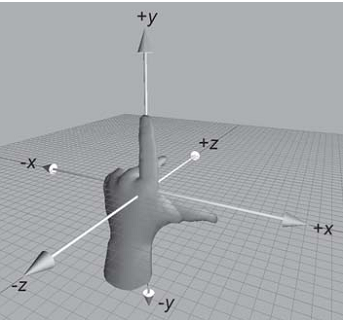
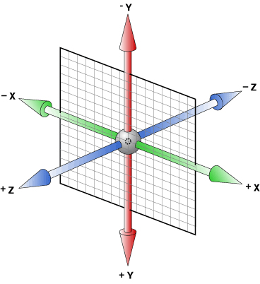

过渡
过渡是CSS3中具有颠覆性的特征之一，可以实现元素不同状态间的平滑过渡（补间动画），经常用来制作动画效果。
帧动画：通过一帧一帧的关键画面按照固定顺序和速度播放。如电影胶片

补间动画：自动完成从起始状到终止状的的过度。
关于补间动画更多学习可查看http://mux.alimama.com/posts/1009
特点：当前元素只要有“属性”发生变化时，可以平滑的进行过渡。
transition-property设置过渡属性
transition-duration设置过渡时间
transition-timing-function设置过渡速度
transition-delay设置过渡延时
贝塞尔曲线限定了过渡的轨迹。这部分没有提及，有兴趣同学自行查阅相关资料了解一下即可。
以上四属性重在更解，具体细节可参考手册辅助记忆
动画
动画是CSS3中具有颠覆性的特征之一，可通过设置多个节点来精确控制一个或一组动画，常用来实现复杂的动画效果。
参考手册
转换
转换是CSS3中具有颠覆性的特征之一，可以实现元素的位移、旋转、变形、缩放，甚至支持矩阵方式，配合即将学习的过渡和动画知识，可以取代大量之前只能靠Flash才可以实现的效果。
2D 转换
translate(x,y) x、y 可为负值，相对自身移动，并未脱离文档流。
左手坐标系：伸出左手，让拇指和食指成“L”形，大拇指向右，食指向上，中指指向前方。这样我们就建立了一个左手坐标系，拇指、食指和中指分别代表X、Y、Z轴的正方向。
左手法则：左手握住旋转轴，竖起拇指指向旋转轴正方向，正向旋转方向就是其余手指卷曲的方向。

3D坐标轴，用X、Y、Z分别表示空间的3个维度，三条轴上互相垂直。

媒体查询
由于网页呈现终端设备越来越趋向于多样化，尤其是移动终端（手机），具有不同屏幕尽寸、不同分辨率，为了保证网页能十分友好的呈现，CSS3为开发人员提供了可以识别呈现终端的方法，这样便可以有针对性的为不同的呈现终端分别进行处理，被广泛应用于响应式开发中。
html 标签方式：
|
|
css 属性方式：
|
|
常使用的是检测设备宽度
Web字体与字体格式
开发人员可以为自已的网页指定特殊的字体，无需考虑用户电脑上是否安装了此特殊字体，从此把特殊字体处理成图片的时代便成为了过去。
支持程度比较好，甚至IE低版本浏览器也能支持。
不同浏览器所支持的字体格式是不一样的，我们有必要了解一下有关字体格式的知识。
1、TureTpe(.ttf)格式
.ttf字体是Windows和Mac的最常见的字体，是一种RAW格式，支持这种字体的浏览器有IE9+、Firefox3.5+、Chrome4+、Safari3+、Opera10+、iOS
Mobile、Safari4.2+；
2、OpenType(.otf)格式
.otf字体被认为是一种原始的字体格式，其内置在TureType的基础上，支持这种字体的浏览器有Firefox3.5+、Chrome4.0+、Safari3.1+、Opera10.0+、iOS
Mobile、Safari4.2+；
3、Web Open Font Format(.woff)格式
woff字体是Web字体中最佳格式，他是一个开放的TrueType/OpenType的压缩版本，同时也支持元数据包的分离，支持这种字体的浏览器有IE9+、Firefox3.5+、Chrome6+、Safari3.6+、Opera11.1+；
4、Embedded Open Type(.eot)格式
.eot字体是IE专用字体，可以从TrueType创建此格式字体，支持这种字体的浏览器有IE4+；
5、SVG(.svg)格式
.svg字体是基于SVG字体渲染的一种格式，支持这种字体的浏览器有Chrome4+、Safari3.1+、Opera10.0+、iOS
Mobile Safari3.2+；
关于字体介绍摘自http://www.w3cplus.com/content/css3-font-face/
了解了上面的知识后，我们就需要为不同的浏览器准备不同格式的字体，通常我们会通过字体生成工具帮我们生成各种格式的字体，因此无需过于在意字体格式间的区别差异。
推荐http://www.zhaozi.cn/、http://www.youziku.com/ 查找更多中文字体
字体图标
其实我们可以把文字理解成是一种特殊形状的图片，反之我们是不是也可以把图片制作成字体呢？
答案是肯定的。
常见的是把网页常用的一些小的图标，借助工具帮我们生成一个字体库，然后就可以像使用文字一样使用图标了。
优点：
1、将所有图标打包成字体库，减少请求；
2、具有矢量性，可保证清晰度；
3、使用灵活，便于维护；
Font Awesome 使用介绍
http://fontawesome.dashgame.com/
定制自已的字体图标库
SVG
兼容性
通过http://caniuse.com/
可查询CSS3各特性的支持程度，一般兼容性处理的常见方法是为属性添加私有前缀，如不能解决，应避免使用，无需刻意去处理CSS3的兼容性问题。